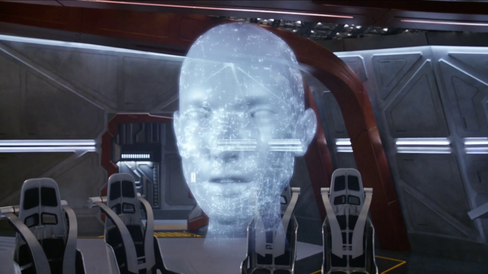

WELCOME TO THE ARROWVERSE
The "Arrowverse" is a television franchise that is based on characters that appear in publications by DC Comics. The shared multiverse is akin to the DC universe in their comic books, which has had crossover plot elements, settings, and characters.

ARTICLES
Gideon
MAY 29, 2020
Gideon..
Gideon is an interactive artificial consciousness (A.I.) used by Eobard Thawne. She was hidden in the Time Vault inside S.T.A.R. Labs. Though Gideon is used by Eobard, she was created by Barry Allen in the future.[1] In order to manage her operating system, one needs the Reverse-Flash ring..
FLASH
MAY 29, 2020

FLASH...
The Flash is an American superhero television series developed by Greg Berlanti, Andrew Kreisberg, and Geoff Johns, airing on The CW. It is based on the DC Comics character Barry Allen / Flash, a costumed superhero crime-fighter with the power to move at superhuman speeds. It is a spin-off from Arrow, existing in the same fictional universe known as Arrowverse. The series follows Barry Allen, portrayed by Grant Gustin, a crime scene investigator who gains super-human speed, which he uses to fight criminals,